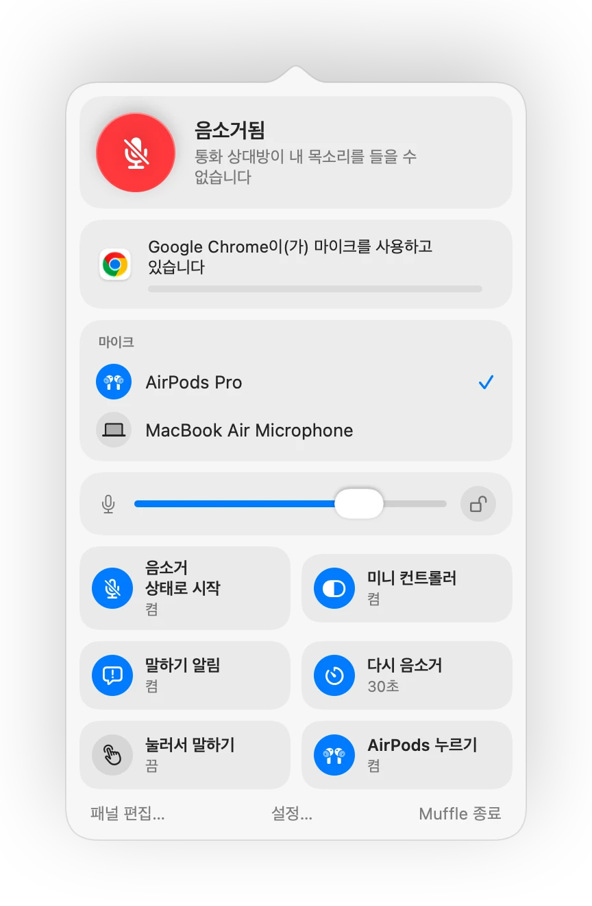

Mac에서 AirPods이나 단축키로 Zoom 음소거하는 방법
Zoom 자체 단축키인 Command-Shift-A는 Zoom 창이 맨 앞에 활성화되어 있을 때만 작동합니다. 회의 중 필기를 하거나 다른 창을 공유하고 있을 때 음소거 버튼을 찾느라 시간을 허비하기 쉽습니다.
Muffle을 사용하면 Zoom뿐 아니라 모든 앱에서 일관된 음소거 제어가 가능합니다. AirPods, 전역 단축키, 메뉴 막대 중 편한 방법을 선택하세요. 마이크 자체를 음소거하므로 Zoom 전용 앱과 웹 브라우저 통화 모두에서 작동합니다.
어디서나 Zoom 음소거하기
- 1
Muffle을 설치하고 마이크 접근 권한을 허용합니다.
- 2
평소처럼 Zoom 회의에 참여합니다.
- 3
어떤 앱을 사용 중이든 AirPods 스템을 누르거나 Control-Option-M을 눌러 음소거합니다.
- 4
음소거 상태에서 Control-Option-M을 길게 누르면 말할 수 있고, 손을 떼면 다시 음소거됩니다.

- Mac에서 Zoom이 AirPods 입력을 직접 처리하더라도 Muffle 단축키와 메뉴 막대를 통해 문제없이 음소거할 수 있습니다.
- Muffle이 마이크를 끈 상태에서도 Zoom 화면에는 음소거 해제 상태로 표시될 수 있습니다. 하지만 회의 참가자에게는 아무 소리도 전달되지 않습니다.
자주 묻는 질문
Muffle이 Zoom 자체 음소거 버튼을 대체하나요?
함께 작동합니다. Muffle은 모든 앱의 마이크 입력을 끄기 때문에 Zoom 창으로 전환하지 않고도 마이크를 음소거할 수 있습니다.
Zoom에서 억누르고 말하기(Push to talk) 기능을 쓸 수 있나요?
네, 가능합니다. 음소거 중에 Muffle 단축키를 길게 누르면 말할 수 있습니다. Zoom은 물론 다른 모든 앱에서도 동일하게 작동합니다.